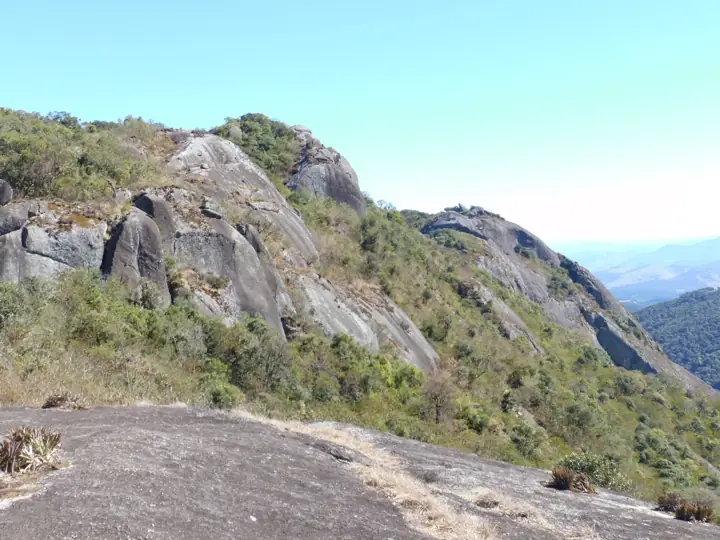

Pedro Vinicius
São Carlos, SP · Trilheiro e corredor
Conquistas
3 de 6 desbloqueadas
- Primeira trilhaConcluída
- 500 m de subidaNuma só saída
- 10 km corridosConcluída
- Nascer do solSaída antes das 5h
-
10 saídas6 de 10
-
100 km em trilhas72 de 100 km